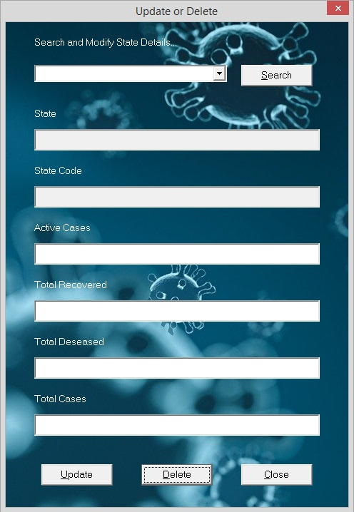
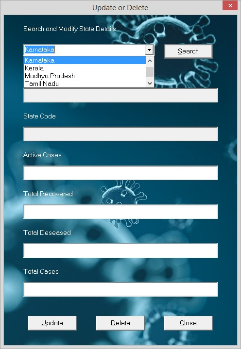
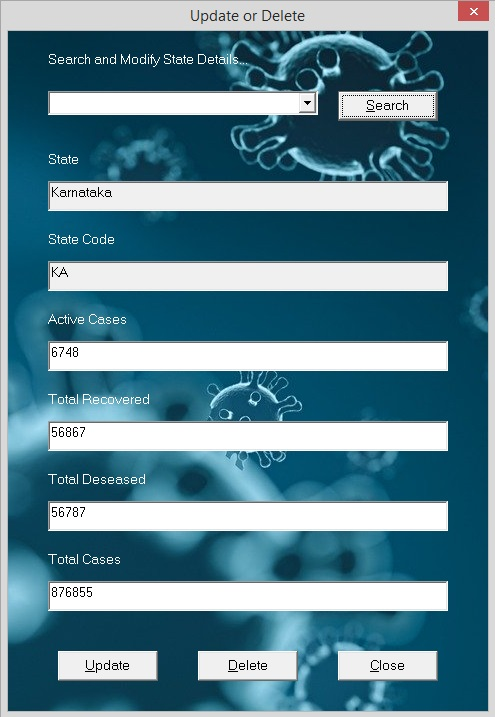

Updating states' COVID-19 details is only possible if you are an Admin user for this application. If you are the first user of this application after istallation, then you may get an error saying No Users Found! Go to 'Register New User' in 'Admin' menu to Register First User as shown in the picture below. So if you are the first user, then register yourself first as specified in the error message.
Clicking on the menu option Update or Delete Existing Data, it asks for the admin approval just like Add New Data does. Once the login credentials are entered in the popup login window and login is successful, Update or Delete Data window opens up and looks like shown in the below picture.

In the field provided for searching, we give the name of the state on whose data some action is required. The search text feild gives the state name suggestions from the database if clicked on the dropdown arrow that is available on the right of the search text feild. This operation is shown in the below picture.

The required state name can be selected from the suggested dropdown list displayed and then the data of the state can be fetched by clicking on the Search button. The state details are displayed in the below respective fields as shown in the picture below. The feilds of State Name and State ID are readonly and they cannot be changed. If a state name change or a state ID change is required, then it is suggested to delete that state's data and re-enter it with correct details through Add New Data.

If updation of data is required then the fields of Active Cases, Total Recovered, Total Deseased and Total Cases are edited with new data and the button Update is clicked. Once the updation is successfull a message is displayed that says Data Updated Successfully! If deletion of data is required, then after the state details are displayed, click on the Delete button. After the data is deleted from the database, message pops up saying Data deleted Successfully!
Let me remind you, that if the search is not performed before trying to Update or Delete data, i.e., if the fields are all empty, An error message is shown saying Search the State Name befor Updating or Deleting. So do not forget to search the state name and verify details before updating or deleting it.